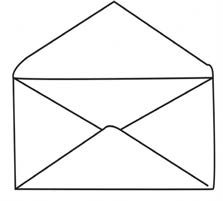

Smooth them with a warm iron after drying. This will serve as a template for creating an envelope pattern. Figure 3 shows unfolded and folded templates;

Figure 3: An example of a template for making an envelope
Place the template on moderately thick paper;
Secure the template onto the thick paper using pins or clips;
Use a ruler and pencil to draw lines along the edges of the template;
Remove the pins or clips, and then separate the template from the thick paper;
Cut the paper using a trimming knife or pair of scissors, or blade. After these steps, the template for the envelope or bag is ready, as shown in Figure 4;
Figure 4: A rectangular envelope template
Fold side number 3 inward. Fold it along the straight line between the corners of that side;
Fold side number 4 in the same way. Sides 3 and 4 will lie flat against each other as shown in Figure 5;
7. Smooth them with a warm iron after drying.This will serve as a template for creating an envelope pattern.Figure 3 presents unfolded and folded templates;Unfolded envelope template with pointed flaps on the top, bottom, left, and right.Partly folded envelope template, with the left side flap folded in toward the middle.Figure 3: An example of a template for making an envelope8. Place the template on moderately thick paper;9. Secure the template onto the thick paper using pins or clips;10. Use a ruler and pencil to draw lines along the edges of the template;11. Remove the pins or clips, and then separate the template from the thick paper;12. Cut the paper using a trimming knife or pair of scissors, or blade.After these steps, the template for the envelope or bag is ready, as shown in Figure 4;Envelope template labeled with 1 at the top, 2 at the bottom, 3 on the left flap, and 4 on the right flap.Figure 4: A rectangular envelope template13. Fold side number 3 inward.Fold it along the straight line between the corners of that side;14. Fold side number 4 in the same way.Sides 3 and 4 will lie flat against each other as shown in Figure 5;